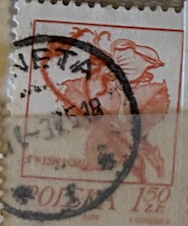
| SOURCE | TITLE| IMAGE MATCH | click to source page |
| eBay | Brazil 3 Porte Nacional Stamp - #S41096NQ | eBay | 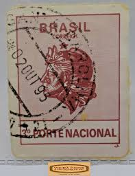 |
| eBay | US 1892 Charter Range Stove Advertising Mail Cover #220 St. Louis MO to NE XQ | eBay | 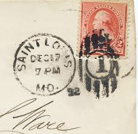 |
| Naval Cover Museum | DALE DD 353 - NavalCoverMuseum | 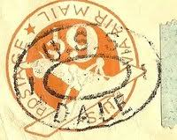 |
| eBay | Jones Dairy Advertising Thomas Jefferson 2 cent Red United States Postage Stamp | eBay | 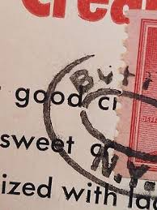 |
| eBay | NSW - AUSTRALIA CIRCULAR POSTMARK - TERRY HILLS - NSW 462 | eBay | 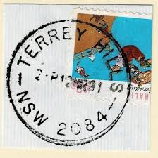 |
| eBay UK | Horses Danish & Faroese Stamps for sale | eBay UK | 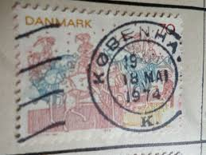 |
| Stamp Auction Network | Prices Realized | 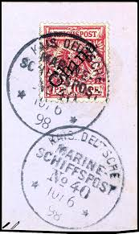 |
| eBay | ORIGINAL Canvas Art by Street Graffiti Artist Zaira! Titled "Stamps" Signed 1/1 | eBay | 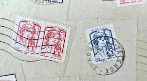 |
| Lakes Guides | Old Cumbria Gazetteer - Whitehaven and Furness Junction Railway | 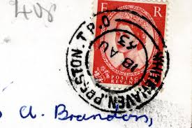 |
| Legacy Family Tree Webinars | Transcribing Documents: There is More Than Meets the Eye! - Legacy Family Tree Webinars | 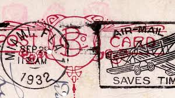 |
| Dreamstime.com | Original Old Stamps Stock Photos - Free & Royalty-Free Stock Photos from Dreamstime | 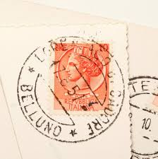 |
| eBay | 1913 Antique Postcard Perry's Victory Centennial Rare Parcel Post 1 Cent Stamp | eBay | 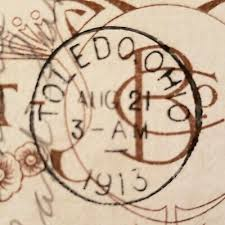 |
| Todocolección | austria - valor facial 2 s - año 1962 -monument - Acquista Francobolli antichi di Austria su todocoleccion | 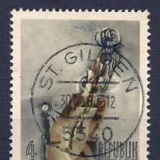 |
| Clube Desportivo A dos Cunhados | WWII US Cut Square UC4 6 cent Air Mail U.S. Army A.P.O. Apr 5th 1946 (a38) - Clube Desportivo A dos Cunhados | 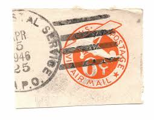 |
| eBay | Australia 1915 6d Kangaroo 3rd Watermark stamp #48a used CV $22.50 | eBay | 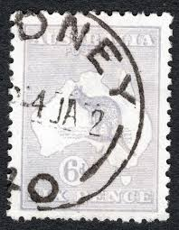 |
| Great Britain Colonies Singapore identity printed noted Singapore's 1955 Queen Elizabeth Boats/ /Ships definitives foften Bost series) introduced the ทอบ everyday finitive: replacing aftertt change reign ssued Sept1955, Elizabeth| working nartime alongside | 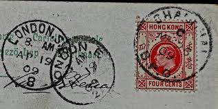 | |
| ProBoards | Italy: Postmarks | The Stamp Forum (TSF) | 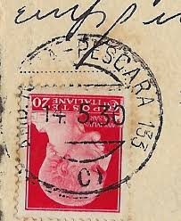 |
| eBay | ALBANIA 131 USED ON PIECE - NO FAULTS VERY FINE! - BOP | eBay | 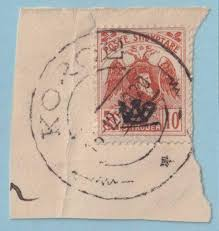 |
| eBay | 1954 FORT TICONDEROGA NEW YORK Postcard Lake Champlain Fort Carillon B5 | eBay | 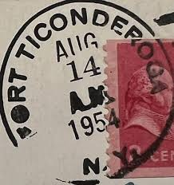 |
| eBay | Grade Gem Historical Figures US Back of Book Stamps for sale | eBay | 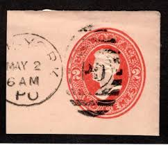 |
| South African stamp used in Egypt during war | 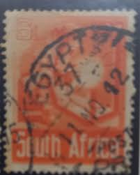 | |
| Alamy | Old stamps hi-res stock photography and images - Page 3 - Alamy | 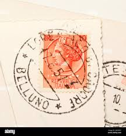 |
| Issuu | U S Specialist Mar 2024 #1129 by 58W40 - Issuu | 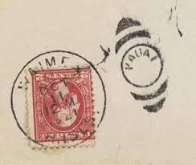 |
| eBay | Switzerland stamps 1912 MI I Pro Juventute Forerunners CANC VF | eBay | 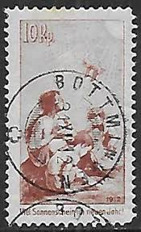 |
| eBay | FANCY CANCEL Boston 2c Jackson Vermillion Odd Shape Design Circa 1870 Cover 9V | eBay | 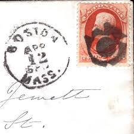 |
| undivided-back postcards | Military cards – undivided-back postcards | 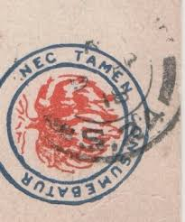 |
| eBay | Gundam Menko Anime Japanese Mini Card Japan Very Rare Showa Vintage 3-inch #109 | eBay | 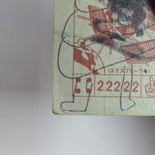 |
| eBay | Great Britain FIRST UNITED KINGDOM AERIAL POST-LONDON 1-SP/14/1911-CORONATION-IL | eBay | 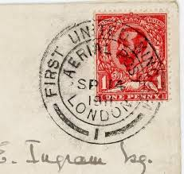 |
| eBay | WWII US Cut Square UC4 6 cent Air Mail U.S. Army A.P.O (a19) | eBay | 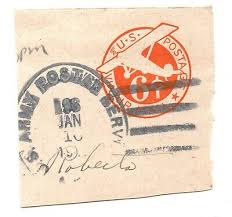 |
| What is the translation of this postcard with Austrian and Jaffa stamps? | 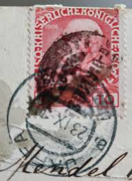 | |
| What are free sites or apps to find stamp details? | 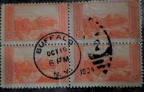 | |
| eBay | WWII US Cut Square UC4 6 cent Air Mail U.S. Army A.P.O. Mar 19th 1946 (a26) | eBay | 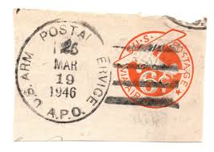 |
| eBay | CPA Marseille parc bolrely cancellation AVIATION postcard (ros4552) | eBay | 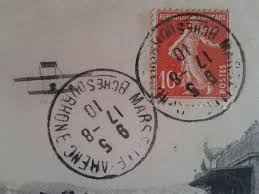 |
| eBay | NEW SOUTH WALES - AUSTRALIA CIRCULAR POSTMARK - BOMBALA - NSW 102 | eBay | 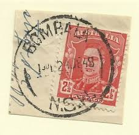 |
| eBay | WWII US Cut Square UC4 6 cent Air Mail U.S. Army A.P.O. Apr 7th 1946 (a32) | eBay | 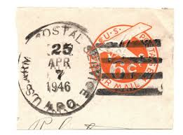 |
| eBay | NSW - AUSTRALIA CIRCULAR POSTMARK - WARNERS BAY - NSW 444 | eBay | 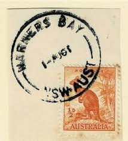 |
| eBay | French India Postal History Stamps for sale | eBay | 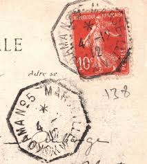 |
| Alamy | Asparagus, its culture for home use and for market; a practical treatise on the planting, cultivation, harvesting, marketing, and preserving of asparagus, with notes on its history and botany. HARVESTING AND | 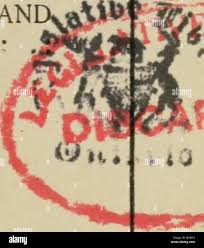 |
| eBay | ad0974 - GREECE - Postal History - COVER to GERMANY 1940 - Double CENSURE! | eBay | 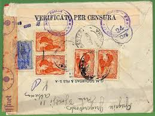 |
| eBay | Egypt Alexandria to Germany Strip of 3 with Printing Guide Selvage 1927 Cover 7v | eBay | 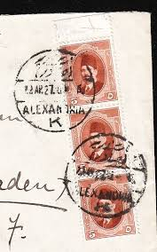 |
| Egy.com | de lesseps statue | 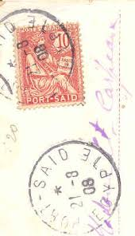 |
| eBay | Greece OCCUPATION POSTAL CARD-HG:I2-TESSALONICA 11/AUG/15-COMMERCIAL | eBay | 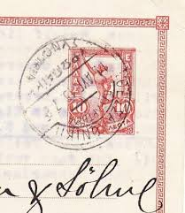 |
| Maps on Stamps | Maps on Stamps : Great Bitter Lake Association | A Database of Cartophilately | 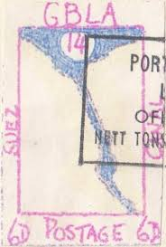 |
| eBay | Villenpartie mit Hôtel Panhans, Kurort Semmering, Austria - 1926, Rough Edges | eBay | 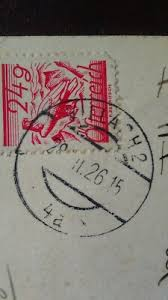 |
| I love my USA Hindenburg stamp covers. And such history. One thing I like is you don't need sheets of a 100 to hoard. Just ones plenty. More to go around then. | 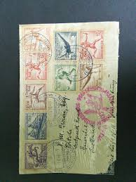 | |
| eBay | Argentina ATTEMPTED USE OF REVENUE STAMP AS POSTAGE-BUENOS AIRES-13/JUL/37-POSTA | eBay | 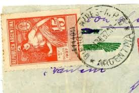 |
| eBay | WWII US Cut Square UC4 6 cent Air Mail U.S. Army A.P.O. Mar 12th 1946 (a50) | eBay | 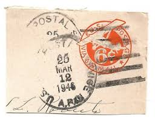 |
| Valuable Rare Postcards | Valuable Rare Postcards: June 2023 | 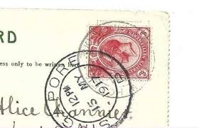 |
| Etsy | Antique Vintage Old Postcard Australian Aboriginal Woman After the Ball Red Australia NSW Stamp Posted - Etsy | 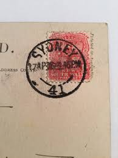 |
| Etsy | Vintage Sepia Portrait Postcards, Antique Women Photos, 1910s Fashion - Etsy Australia | |
| Empirephilatelists.com | Samoa 1886 1s Rose-Carmine SG25a Bisected on Piece V.F.U Stamp|Empire Philatelists | |
| eBay | Art Nouveau 1904 Postcard by "Reutlinger" Letter "G" & Beautiful Color Tinting* | eBay | |
| eBay | Antique 1914 Art ON THE WAY TO THE FAIR Postcard Museum Paris | eBay | |
| eBay | 1975 U.S. 11C STAMP #1593 WITH 1978 PURPLE SON SOTN BULLSEYE CANCEL | eBay | |
| bwdavis.ca | Canada - BK76 Booklet Errors - Canadian Stamps and collectables of Bwdavis | |
| Duzik Stamps | India (1852-1970) - Duzik Stamps | |
| eBay | Netherlands Antilles Sc#61-SABA-21/4/27-TO CHICAGO ILL-SCARCE USAGE-OPENED A BIT | eBay | |
| eBay | Vintage Posted Salzburg Postcard | eBay | |
| WorthPoint | POSTCARD 1910 HILL STATION SIERRA LEONE POSTMARK REGENT ROAD FREETOWN to LINCOLN | #269079527 | |
| eBay | WWII US Cut Square UC4 6 cent Air Mail U.S. Army A.P.O. Mar 12th 1946 (a49) | eBay |